後話：一開始下載應用程式時還未發現異狀，但查資料時赫然發覺開發已經停擺許久。因此若要分類截圖請用其他應用程式，這篇就當笑話看看就好。
在開始使用Android之後，我發現我數一數二常做的事情就是截圖。截圖之後，再期待自己會回去處理截圖中的事情。例如，看到IG上分享的音樂就截，看到好吃的東西就截，看到好笑的迷因或對話就截……但截圖之後，往往只會在相簿裡慢慢堆積，堆積到一定的程度又將他們全部刪了。多沒意義。
於是最近在某個地方看到Firefox ScreenshotGo的時候，就決定載下來測試一下。根據官網敘述，Firefox ScreenshotGo「讓你在Android手機上快速截圖與整理截圖」。官網又表示，目前這個應用程式只有在印尼開放測試使用，但我在Play商店上已經找得到它了。
目前這個應用程式尚在Beta版，因此很有可能有一些功能尚未完備。
一打開應用程式，第一個看到的是歡迎畫面，與一些初期設定及教學。很明顯，這個程式還沒有中文翻譯。這個程式主要有三種畫面，一是瀏覽截圖，二是檢視截圖，三是歸類截圖。
| 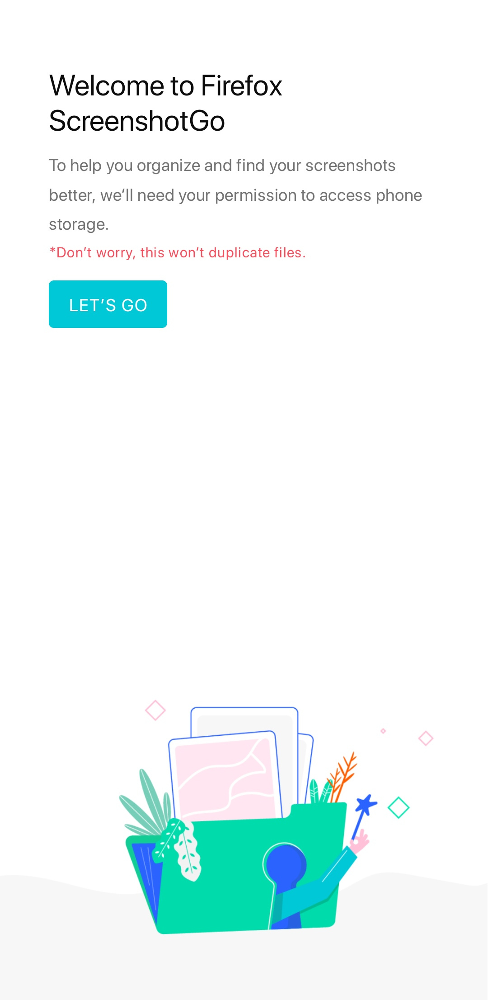 | 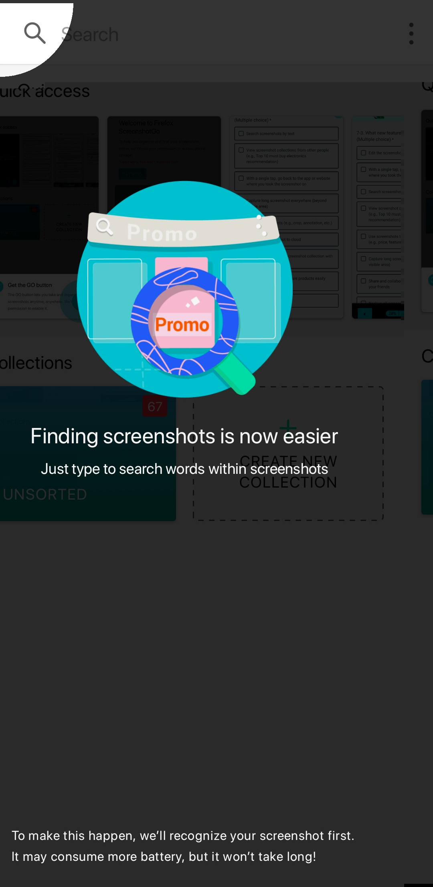 | 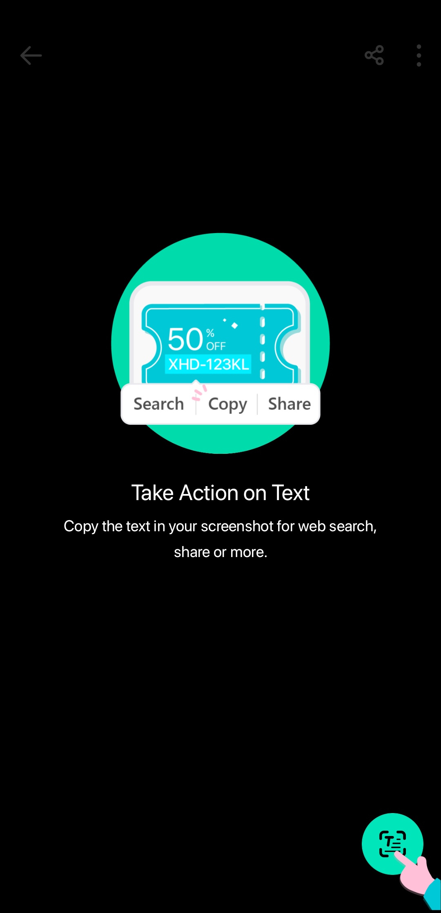 |
一開始也會通知使用者設定「Go」按鈕以利截圖，而這需要「在應用程式上層顯示」權限。開了之後，會多一個藍綠色按鈕在螢幕上，跟Messenger大頭貼相似。
| 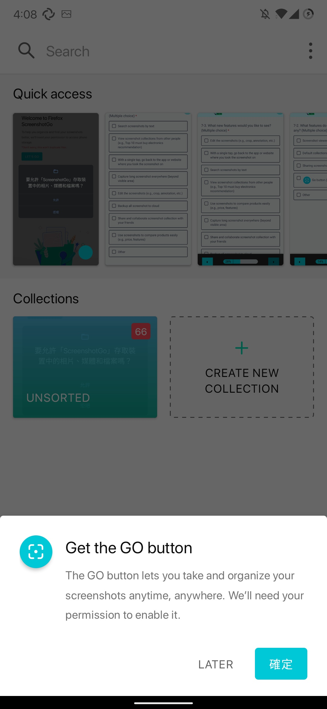 | 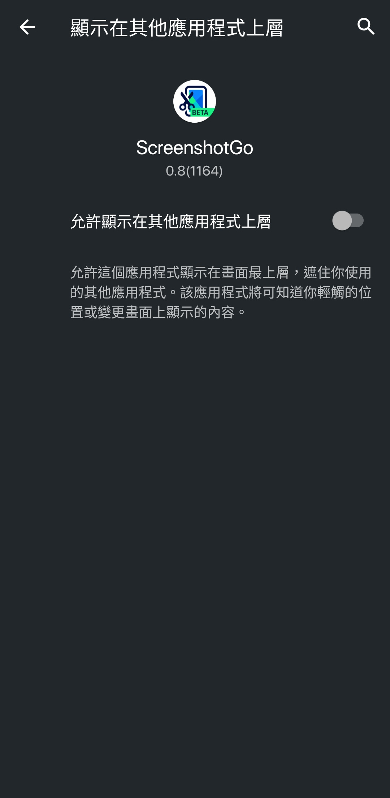 |
應用程式首頁由兩個部份組成：「快速取用」(Quick Access)跟「分類」(Collections)。一開始的分類只有「未分類」(Unsorted)一種。上方有個搜尋列，點進去會顯示「連上網路以安裝離線文字辨識模組」。但在開著行動網路或連上Wifi的情況下，它依然會顯示這個畫面。看來目前這個功能是無法使用的。而點入下方分類後，就是三個一排的瀏覽畫面。
| 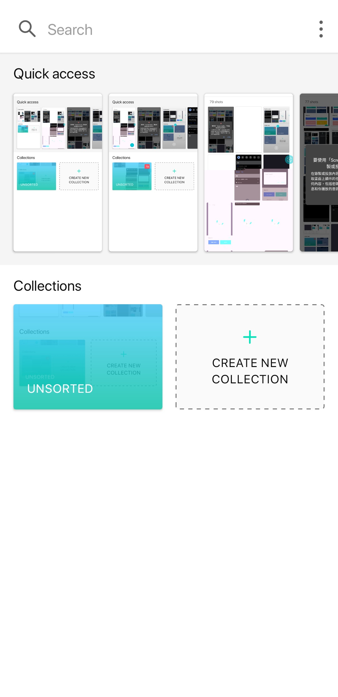 | 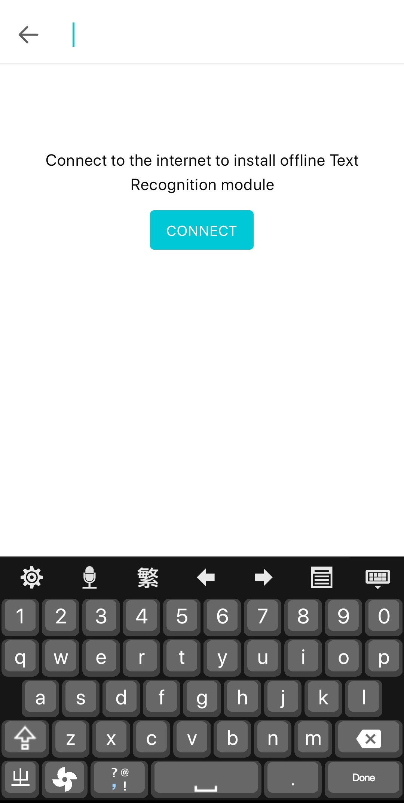 | 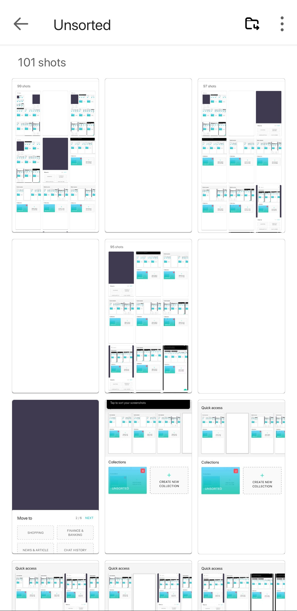 |
檢視截圖的畫面有兩種：第一種是從快速取用點進去的檢視畫面，第二種是從分類裡點進截圖的檢視畫面。兩種檢視畫面的差別主要是「歸類截圖」(Move To)的位置，一個藏在三個點裡面，另一個以圖示呈現在外面。共通點是，右下方都有一個「轉為文字」的圓形按鈕。問題是，點下之後依然會顯示「連上網路以安裝離線文字辨識模組」，而從這邊依然無法安裝離線文字辨識模組。
| 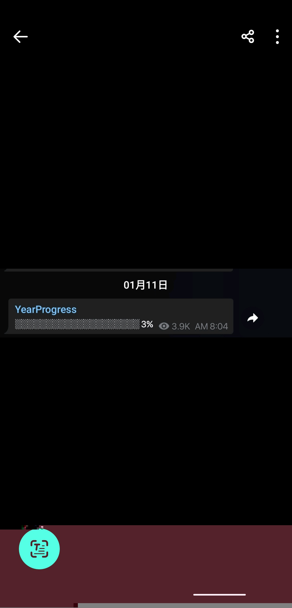 | 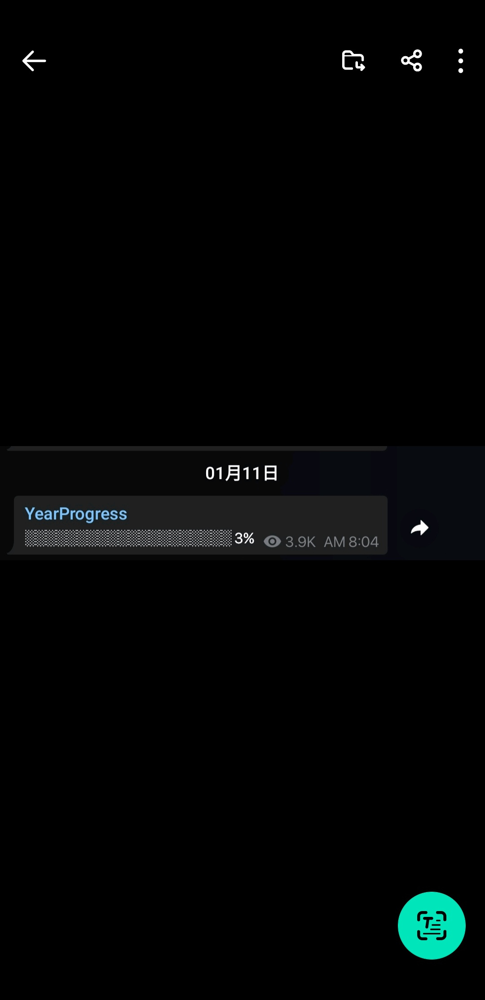 | 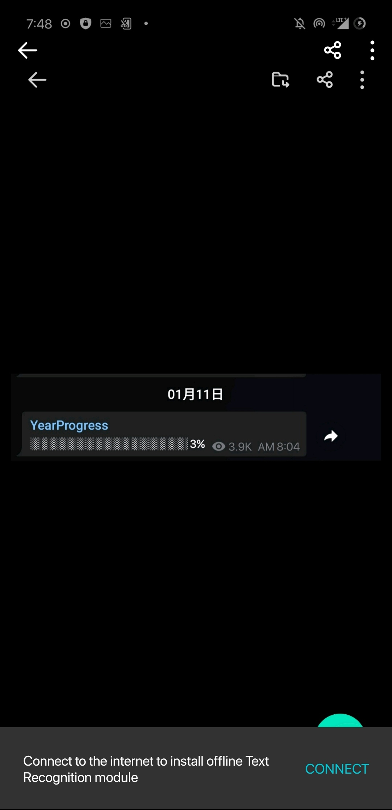 |
進入截圖歸類的方法有幾種：第一個是快速取用的畫面裡選擇「Move to…」，第二個是在任一分類裡點選截圖檢視，再按右上角有資料夾與箭頭的圖示。在截圖時按下上面的通知，或是使用「Go」按鈕截圖，也會進到此畫面。在這裡有五個預設但尚未建立的分類：「購物」(Shopping)、「財務」(Finance & Banking)、「新聞與文章」(News & Article)、「聊天紀錄」(Chat History)、「活動」(Events & Activities)。目前這些分類是無法移除的：就算你建立了其他分類，他們依然不會消失。目前唯一移除預設分類的方法，是先把截圖歸類到預設分類，再去首頁刪除分類。
如果一次截了不只兩張圖片，在歸類完第一個截圖之後，它會繼續歸類下一張截圖，直到歸類完畢。但跳到下一張圖之前會有一張空白。
| 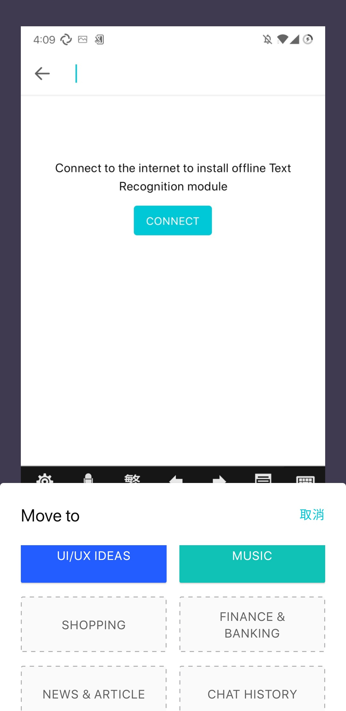 | 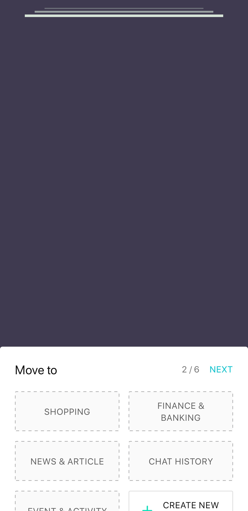 | 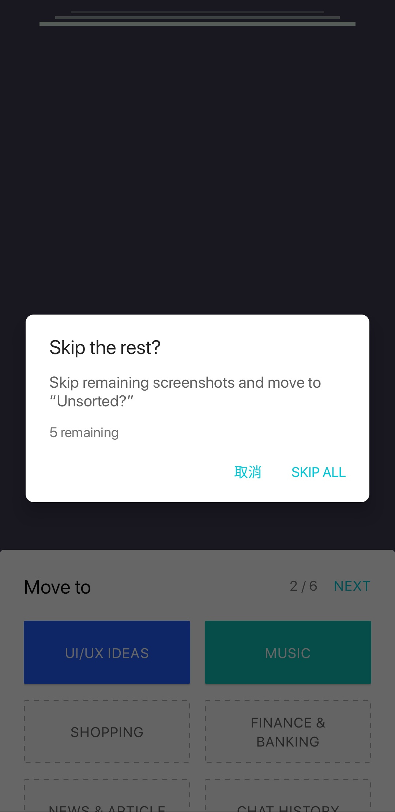 |
在開啟程式後，會有一個固定的通知卡在通知欄：「點選以截圖」。點擊向下箭頭後出現兩個選項：「打開程式」(Open app)與「停止」(Stop)。而在使用螢幕截圖的快捷鍵或其他方式截圖後，會出現要求你歸類截圖的通知。「Go」按鈕也是用來快速截圖，在點選之後會顯示「要使用「ScreenshotGo」開始錄製或投放內容嗎？」的對話框。但他並非真的螢幕錄影，而是使用短暫的螢幕錄影功能截圖。
| 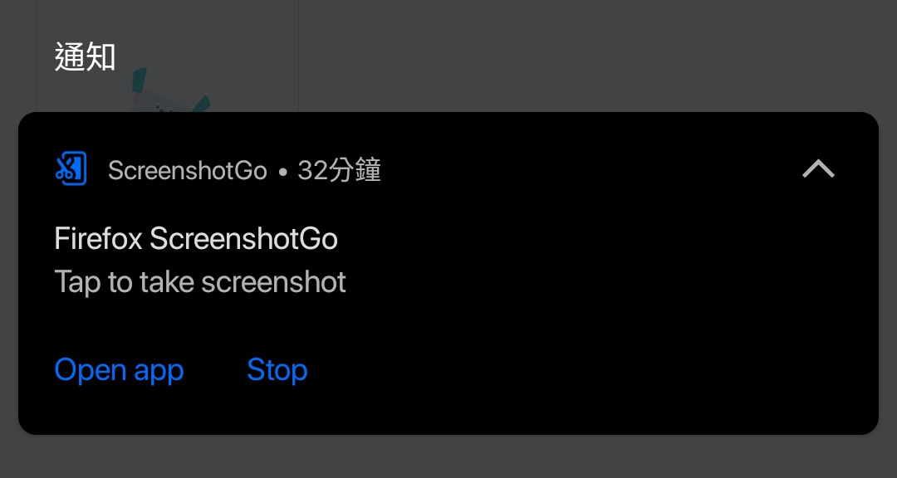 | 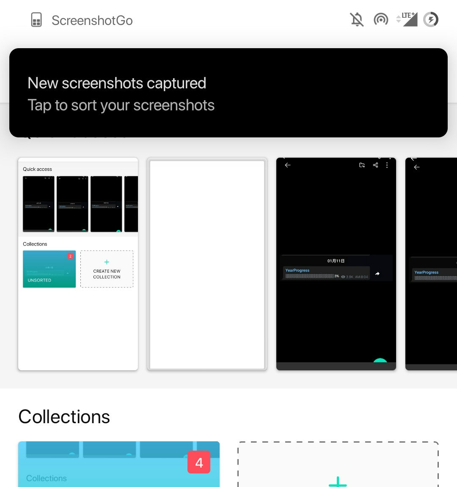 | |
在設定頁面可以把Go按鈕跟通知關閉，也可以關閉Mozilla收集統計資料。

雖然沒用過其他歸類截圖的應用程式，因此無從比較，但用他來整理截圖確實比用相簿自己拉來的方便一點。而且，使用OCR辨認截圖上的文字也是往對的方向跨了一小步，雖然這個概念iOS手機上已經有了。但目前也有許多不方便之處，如：
因此以目前的體驗來說，我無法推薦這個程式給任何人。但既然是Beta版，犯一些錯、有一些Bug自然是情有可原，問題是，這個應用程式的未來發展方向會是如何？
還記得Firefox Lite嗎？曾經是Firefox Rocket的它，引進了底部導覽列、擋廣告的「Turbo Mode」等，而面向的是亞洲中低階市場。一開始我下載過，還覺得不錯用。但在改名Firefox Lite後的某個版本，他引進了「購物模式」，旨在讓使用者購物時能比價找到最低價者，但注意：這已經逾越瀏覽器應有的功能，在英文稱之為「Bloat」，即多出來用不到的東西。後來它將瀏覽器原本的「隱私分頁」按鈕換成了購物按鈕，（有趣的是，他們的UX設計師還曾經發表文章，表示根據回傳的資料，使用者使用隱私分頁的需求高過於使用購物按鈕的需求。）在最後幾個版本，它甚至開始出現移除不掉的廣告連結，還推播廣告通知給使用者，大幅降低使用體驗。後來這個亂象以Mozilla解僱250個員工並解散台北辦公室作收，Firefox Lite也在不久後永久停更。
而Firefox ScreenshotGo同樣是「面對中低階市場」，同樣是從印尼開始，因此也許與Firefox Lite一樣，會走商業化的老路。更何況我在提供回饋的表單中看到這個題目：「你想看到什麼功能被加入？」
注意第二項：「檢視其他人的截圖集錦（如：十大推薦電子產品）」、倒數兩項：「與朋友分享截圖集錦」、「使用截圖輕鬆比對商品」，就知道這個程式很有可能與Firefox Lite的走向一模一樣，因此也很有可能在哪一天功能多到使用者體驗極差，逃不掉被砍掉的命運。
後話：這個應用程式真的被砍掉了，最後一個版本在2019年3月15日於Google Play發表，Github目前也已封存。神奇的是，目前它沒像Firefox Lite從Google Play上移除，而依然在Google Play上下載的到。所以我一開始才會以為它還活著，才寫了這樣一篇文章。現在只能當失敗的笑話看待了。